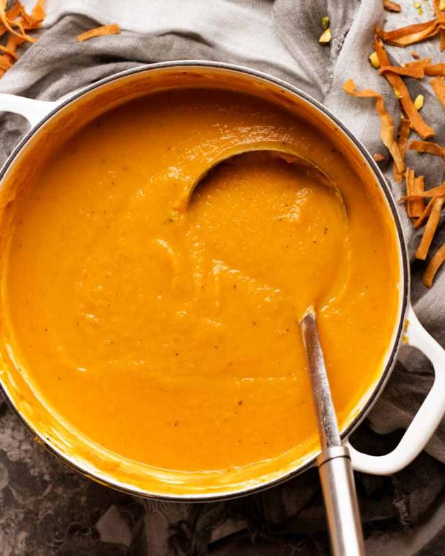

Sweet Potato Soup

List of Ingredients:
- Oil(1tbs)
- Onion (2)
- Garlic cloved (2)
- Chili (1)
- Sweet potatoes (300 g)
- Potatoes (200 g)
- Vegetable broth
- Heavy cream (1 cup)
- Paprika (2 tbsp)
- Salt
- Pebber
- Cumin
Intstructions
- Sauté leek, onion and garlic for 5 minutes until sweet and softened.
- Stir sweet potato and cumin for 3 minutes so it's nicely coated in the flavoured oil and the cumin gets toasted, which brings out the flavour.
- Simmer 20 minutes: Add the stock and simmer for 20 minutes with the lid off.
- Blitz with a stick blender until smooth.
- Stir in Cream
- Serve: Ladle into bowls and shower with something crispy! More chat on this below.